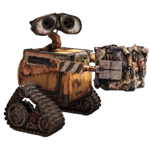
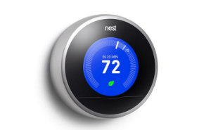
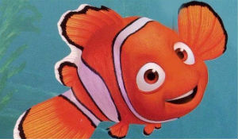
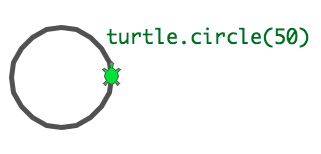
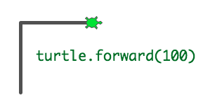

Programming is everywhere
Your computer right in front of you, the games you like to play, even your fridge!
Robots, space, shopping, construction...
 Python is awesome because it enables programmers
(like yourselves!) to create programs easily and quickly.
Google uses python to make your searches fast
Movies like Finding Nemo have python code to help make the movie
Turtles

Let's play with some turtles
We are telling the turtle exactly what to do.
She can't move on her own!
Quick demonstration
 Functions
What is a function?
A function is an action that takes input and gives you output.
Sometimes input and output could be nothing!
Using a function in Python looks like this:
my_cool_function(INPUT)
The OUTPUT is sometimes nothing, a number, a word, or an action on something.
For turtles, what kind of actions did you see?
In Python, we can use actions in two ways:
Making the action happen on something (eg. a cute turtle):
turtle.forward();
Give us output
What does this function do?
times_two(2)
>>> 4
What is the input and output here?
Input is 2, output is 4
It takes the INPUT (the number two) and multiplies it by two. The OUTPUT is 4.
Make a function
def times_two(number):
return number * 2
'return' means to give back the output
Variables
A variable is used to replace a name with a value.
number was a variable for some number we want to use in the function
You can also use "strings"
Let's try it
Make a function that takes input, and gives output
Examples:
def feed_me(food):
print "Okay, here is some " + food
and use it:
feed_me("bread")
"print" is used to immediately write strings back to you
In Python, the indentation, or spacing from the left on the second line, is important
Functions are great for repeating actions
make_circle()
make_square()
make_circle()
...
Making our turtles move
We can tell our turtles to move around with these actions
Setup
1. Open a terminal
2. Type python [enter]
3. Type import turtle [enter]
4. Type turtle.pendown() [enter]
Try it out!
turtle.forward(10)
Move foward 10 steps
turtle.backward(5)
Move back 5 steps
turtle.right(90)
Rotate clockwise by 90 degrees
turtle.left(90)
Rotate counter-clockwise by 90 degrees
turtle.circle(50)
Make a circle
turtle.penup()
turtle.pendown()
Stop or start drawing